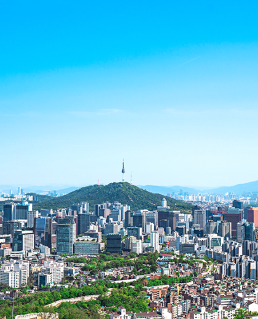

GALLERY
SEOUL Gallery
Seoul is a city where modernity and tradition coexist, with an impressive skyline
and vibrant night views along the Han River.
In Bukchon Hanok Village, you can experience the serene beauty of traditional Korean houses,
and historical landmarks like Gyeongbokgung Palace are scattered throughout the city.
From Namsan Tower, you can enjoy a panoramic view of Seoul,
a charming city where diverse cultures and history come together.


- 